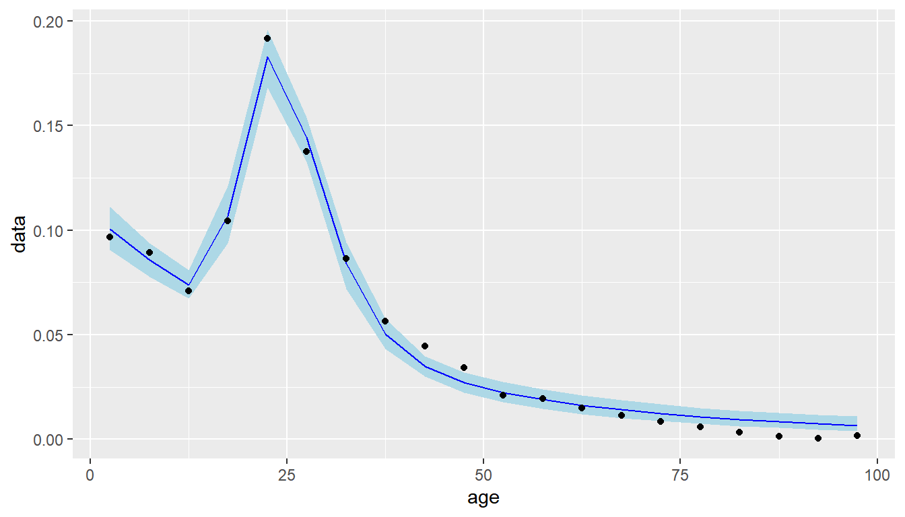

Chapter 10 Fitting schedules
10.1 .
10.1.1 Fitting Roger Castro migration age schedules
- If we have age-specific migration data we might want to estimate the parameters of a Rogers Castro age schedule to
- Smooth the data
- Analyse the parameter estimates
- Create projected age schedules based on past patterns of the age schedule parameters
- Fitting Rogers Castro migration age schedules can be difficult.
- A number of different software has been used to fit age schedules including Rogers and Little (1994), TableCurve 2D Rogers and Raymer (1999), MATLAB Rogers, Raymer, and Little (2010), and Excel Wilson (2010).
- The
mig_estimate_rc()function in DemoTools or rcbayes uses Stan, via the rstan package, a Bayesian probabilistic programming language- Estimation is carried out using MCMC sampling.
- Requires two arguments
agesa vector of migration agesmxa vector of standardized migration intensities for the corresponding ages- Specify form of age schedule using the
pre_working_age,working_age,retirementandpost_retirementarguments - set toTRUEorFALSE
10.1.2 Fitting Roger Castro migration age schedules
- Demonstrate with five-year data from the
italy_areadata set in migest- Calculate the out-migration for Islands (Sicily and Sardinia) in 1970
# include a numeric age column for mig_estimate_rc()
i <- italy_area %>%
filter(year == 1970) %>%
group_by(age_grp) %>%
sum_turnover() %>%
filter(region == "Islands") %>%
separate(col = age_grp, into = c("age_min", "age_max"),
remove = FALSE, convert = TRUE)## Adding missing grouping variables: `age_grp`i## # A tibble: 20 x 8
## # Groups: age_grp [20]
## age_grp age_min age_max region in_mig out_mig turn net
## <fct> <int> <int> <chr> <dbl> <dbl> <dbl> <dbl>
## 1 0-4 0 4 Islands 4532 7876 12408 -3344
## 2 5-9 5 9 Islands 3592 7271 10863 -3679
## 3 10-14 10 14 Islands 2228 5779 8007 -3551
## 4 15-19 15 19 Islands 3064 8526 11590 -5462
## 5 20-24 20 24 Islands 6861 15629 22490 -8768
## 6 25-29 25 29 Islands 5891 11224 17115 -5333
## 7 30-34 30 34 Islands 4042 7046 11088 -3004
## 8 35-39 35 39 Islands 2480 4612 7092 -2132
## 9 40-44 40 44 Islands 1737 3634 5371 -1897
## 10 45-49 45 49 Islands 1383 2783 4166 -1400
## 11 50-54 50 54 Islands 910 1716 2626 -806
## 12 55-59 55 59 Islands 899 1587 2486 -688
## 13 60-64 60 64 Islands 789 1217 2006 -428
## 14 65-69 65 69 Islands 602 924 1526 -322
## 15 70-74 70 74 Islands 427 702 1129 -275
## 16 75-79 75 79 Islands 311 490 801 -179
## 17 80-84 80 84 Islands 158 268 426 -110
## 18 85-89 85 89 Islands 59 116 175 -57
## 19 90-94 90 94 Islands 17 35 52 -18
## 20 95+ 95 NA Islands 95 137 232 -4210.1.3 Fitting Roger Castro migration age schedules
- Requires a standardized age schedule (where values sum to one)
- Will take a few minutes and print out lots of messages from Stan
m <- i$out_mig/sum(i$out_mig)
m## [1] 0.0965527387 0.0891359780 0.0708453881 0.1045211592 0.1915976070
## [6] 0.1375962340 0.0863776786 0.0565390085 0.0445496004 0.0341170990
## [11] 0.0210366302 0.0194552052 0.0149193351 0.0113274163 0.0086058942
## [16] 0.0060069632 0.0032854411 0.0014220566 0.0004290688 0.0016794979f <- mig_estimate_rc(ages = i$age_min + 2.5, mx = m,
# set model components
pre_working_age = TRUE, working_age = TRUE,
retirement = FALSE, post_retirement = FALSE)##
## SAMPLING FOR MODEL 'f4d0f16f36ddb7179a67ef654e5d224a' NOW (CHAIN 1).
## Chain 1:
## Chain 1: Gradient evaluation took 0 seconds
## Chain 1: 1000 transitions using 10 leapfrog steps per transition would take 0 seconds.
## Chain 1: Adjust your expectations accordingly!
## Chain 1:
## Chain 1:
## Chain 1: Iteration: 1 / 2000 [ 0%] (Warmup)
## Chain 1: Iteration: 200 / 2000 [ 10%] (Warmup)
## Chain 1: Iteration: 400 / 2000 [ 20%] (Warmup)
## Chain 1: Iteration: 600 / 2000 [ 30%] (Warmup)
## Chain 1: Iteration: 800 / 2000 [ 40%] (Warmup)
## Chain 1: Iteration: 1000 / 2000 [ 50%] (Warmup)
## Chain 1: Iteration: 1001 / 2000 [ 50%] (Sampling)
## Chain 1: Iteration: 1200 / 2000 [ 60%] (Sampling)
## Chain 1: Iteration: 1400 / 2000 [ 70%] (Sampling)
## Chain 1: Iteration: 1600 / 2000 [ 80%] (Sampling)
## Chain 1: Iteration: 1800 / 2000 [ 90%] (Sampling)
## Chain 1: Iteration: 2000 / 2000 [100%] (Sampling)
## Chain 1:
## Chain 1: Elapsed Time: 0.75 seconds (Warm-up)
## Chain 1: 0.465 seconds (Sampling)
## Chain 1: 1.215 seconds (Total)
## Chain 1:
##
## SAMPLING FOR MODEL 'f4d0f16f36ddb7179a67ef654e5d224a' NOW (CHAIN 2).
## Chain 2:
## Chain 2: Gradient evaluation took 0 seconds
## Chain 2: 1000 transitions using 10 leapfrog steps per transition would take 0 seconds.
## Chain 2: Adjust your expectations accordingly!
## Chain 2:
## Chain 2:
## Chain 2: Iteration: 1 / 2000 [ 0%] (Warmup)
## Chain 2: Iteration: 200 / 2000 [ 10%] (Warmup)
## Chain 2: Iteration: 400 / 2000 [ 20%] (Warmup)
## Chain 2: Iteration: 600 / 2000 [ 30%] (Warmup)
## Chain 2: Iteration: 800 / 2000 [ 40%] (Warmup)
## Chain 2: Iteration: 1000 / 2000 [ 50%] (Warmup)
## Chain 2: Iteration: 1001 / 2000 [ 50%] (Sampling)
## Chain 2: Iteration: 1200 / 2000 [ 60%] (Sampling)
## Chain 2: Iteration: 1400 / 2000 [ 70%] (Sampling)
## Chain 2: Iteration: 1600 / 2000 [ 80%] (Sampling)
## Chain 2: Iteration: 1800 / 2000 [ 90%] (Sampling)
## Chain 2: Iteration: 2000 / 2000 [100%] (Sampling)
## Chain 2:
## Chain 2: Elapsed Time: 0.699 seconds (Warm-up)
## Chain 2: 0.486 seconds (Sampling)
## Chain 2: 1.185 seconds (Total)
## Chain 2:
##
## SAMPLING FOR MODEL 'f4d0f16f36ddb7179a67ef654e5d224a' NOW (CHAIN 3).
## Chain 3:
## Chain 3: Gradient evaluation took 0 seconds
## Chain 3: 1000 transitions using 10 leapfrog steps per transition would take 0 seconds.
## Chain 3: Adjust your expectations accordingly!
## Chain 3:
## Chain 3:
## Chain 3: Iteration: 1 / 2000 [ 0%] (Warmup)
## Chain 3: Iteration: 200 / 2000 [ 10%] (Warmup)
## Chain 3: Iteration: 400 / 2000 [ 20%] (Warmup)
## Chain 3: Iteration: 600 / 2000 [ 30%] (Warmup)
## Chain 3: Iteration: 800 / 2000 [ 40%] (Warmup)
## Chain 3: Iteration: 1000 / 2000 [ 50%] (Warmup)
## Chain 3: Iteration: 1001 / 2000 [ 50%] (Sampling)
## Chain 3: Iteration: 1200 / 2000 [ 60%] (Sampling)
## Chain 3: Iteration: 1400 / 2000 [ 70%] (Sampling)
## Chain 3: Iteration: 1600 / 2000 [ 80%] (Sampling)
## Chain 3: Iteration: 1800 / 2000 [ 90%] (Sampling)
## Chain 3: Iteration: 2000 / 2000 [100%] (Sampling)
## Chain 3:
## Chain 3: Elapsed Time: 0.624 seconds (Warm-up)
## Chain 3: 0.466 seconds (Sampling)
## Chain 3: 1.09 seconds (Total)
## Chain 3:
##
## SAMPLING FOR MODEL 'f4d0f16f36ddb7179a67ef654e5d224a' NOW (CHAIN 4).
## Chain 4:
## Chain 4: Gradient evaluation took 0 seconds
## Chain 4: 1000 transitions using 10 leapfrog steps per transition would take 0 seconds.
## Chain 4: Adjust your expectations accordingly!
## Chain 4:
## Chain 4:
## Chain 4: Iteration: 1 / 2000 [ 0%] (Warmup)
## Chain 4: Iteration: 200 / 2000 [ 10%] (Warmup)
## Chain 4: Iteration: 400 / 2000 [ 20%] (Warmup)
## Chain 4: Iteration: 600 / 2000 [ 30%] (Warmup)
## Chain 4: Iteration: 800 / 2000 [ 40%] (Warmup)
## Chain 4: Iteration: 1000 / 2000 [ 50%] (Warmup)
## Chain 4: Iteration: 1001 / 2000 [ 50%] (Sampling)
## Chain 4: Iteration: 1200 / 2000 [ 60%] (Sampling)
## Chain 4: Iteration: 1400 / 2000 [ 70%] (Sampling)
## Chain 4: Iteration: 1600 / 2000 [ 80%] (Sampling)
## Chain 4: Iteration: 1800 / 2000 [ 90%] (Sampling)
## Chain 4: Iteration: 2000 / 2000 [100%] (Sampling)
## Chain 4:
## Chain 4: Elapsed Time: 0.57 seconds (Warm-up)
## Chain 4: 0.496 seconds (Sampling)
## Chain 4: 1.066 seconds (Total)
## Chain 4:10.1.4 Fitting Roger Castro migration age schedules
The fitted object has two components
# parameter estimates
f[[1]]## # A tibble: 7 x 4
## variable median lower upper
## <chr> <dbl> <dbl> <dbl>
## 1 a1[1] 0.107 0.0948 0.119
## 2 a2[1] 0.340 0.273 0.380
## 3 alpha1[1] 0.0322 0.0267 0.0418
## 4 alpha2[1] 0.227 0.164 0.302
## 5 c 0.00151 0.0000482 0.00768
## 6 lambda2[1] 0.184 0.150 0.261
## 7 mu2[1] 24.6 21.4 27.0# fitted schedule
f[[2]]## # A tibble: 20 x 6
## age data median lower upper diff_sq
## <dbl> <dbl> <dbl> <dbl> <dbl> <dbl>
## 1 2.5 0.0966 0.100 0.0907 0.111 0.0000154
## 2 7.5 0.0891 0.0857 0.0777 0.0939 0.0000121
## 3 12.5 0.0708 0.0738 0.0675 0.0808 0.00000903
## 4 17.5 0.105 0.107 0.0936 0.121 0.00000645
## 5 22.5 0.192 0.183 0.168 0.196 0.0000744
## 6 27.5 0.138 0.144 0.133 0.154 0.0000443
## 7 32.5 0.0864 0.0841 0.0720 0.0942 0.00000535
## 8 37.5 0.0565 0.0505 0.0433 0.0579 0.0000367
## 9 42.5 0.0445 0.0350 0.0300 0.0398 0.0000906
## 10 47.5 0.0341 0.0272 0.0223 0.0319 0.0000479
## 11 52.5 0.0210 0.0224 0.0177 0.0274 0.00000186
## 12 57.5 0.0195 0.0190 0.0145 0.0239 0.000000185
## 13 62.5 0.0149 0.0164 0.0121 0.0212 0.00000215
## 14 67.5 0.0113 0.0142 0.0103 0.0188 0.00000833
## 15 72.5 0.00861 0.0124 0.00873 0.0168 0.0000143
## 16 77.5 0.00601 0.0108 0.00746 0.0151 0.0000234
## 17 82.5 0.00329 0.00954 0.00639 0.0137 0.0000391
## 18 87.5 0.00142 0.00842 0.00551 0.0126 0.0000490
## 19 92.5 0.000429 0.00747 0.00472 0.0118 0.0000495
## 20 97.5 0.00168 0.00665 0.00405 0.0110 0.000024710.1.5 Fitting Roger Castro migration age schedules
ggplot(data = f[[2]],
mapping = aes(x = age, y = data)) +
geom_ribbon(mapping = aes(ymin = lower, ymax = upper), fill = "lightblue") +
geom_line(mapping = aes(y = median), colour = "blue") +
geom_point() 
10.1.6 Fitting Roger Castro migration age schedules
- The migraR package by Ruiz-Santacruz and Garcés also has functions to estimate parameters in Rogers Castro schedule
- Also not on CRAN
- Uses an optimization procedure (non-Bayesian)
- Functions to select best form schedule
- Selecting the form of the schedule usually requires some form of visual inspection
References
Rogers, Andrei, and Jani S Little. 1994. “An International Journal of Parameterizing age patterns of demographic rates with the multiexponential model schedule.” Mathematical Population Studies 4 (3): 175–95. https://doi.org/10.1080/08898489409525372.
Rogers, Andrei, and James Raymer. 1999. “Estimating the regional migration patterns of the foreign-born population in the United States: 1950-1990.” Mathematical Population Studies 7 (3): 181–216, 307. https://doi.org/10.1080/08898489909525457.
Rogers, Andrei, James Raymer, and Jani Little. 2010. The Indirect Estimation of Migration. Vol. 26. The Springer Series on Demographic Methods and Population Analysis. Dordrecht: Springer Netherlands. https://doi.org/10.1007/978-90-481-8915-1.
Wilson, Tom. 2010. “Model migration schedules incorporating student migration peaks.” Demographic Research 23 (8): 191–222. https://doi.org/10.4054/DemRes.2010.23.8.